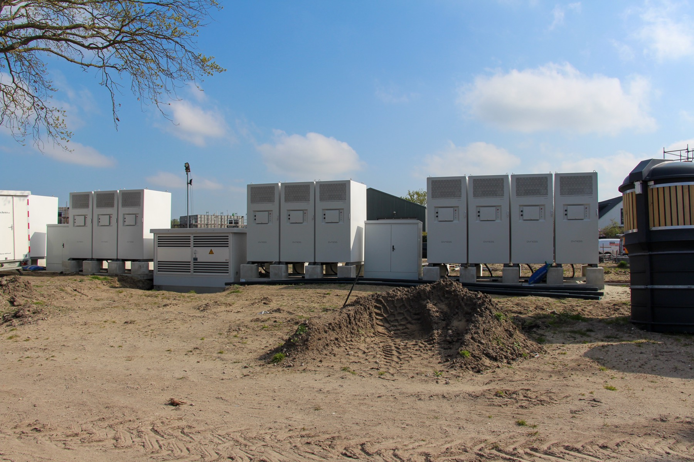

In het kort
- Park
- Landal Schouwse Valleien
- Regio
- Zeeland, Schouwen-Duiveland
- Omvang
- 135 vakantiewoningen (4, 6 en 8 personen) en een centraal gebouw met keuken
- Netaansluiting
- 3x200 A (circa 140 kVA), geen teruglevering
- Wat er staat
- Warmtepomp, airco en laadpaal per woning
Circa 50 omvormers, ook 200 panelen op het centrale gebouw
14 batterijen, samen 1.400 kW en 3,2 MWh - Rol van Oliva
- EMS, sturing, Flexbox op locatie en portaal (Oliva Systems)
- Samen met
- Saman Groep Projecten (ontwerp en installatie)
Gasloos bouwen is de norm. Het net is daar nog niet klaar voor.
Nieuwe vakantiewoningen krijgen geen gasaansluiting meer. Dat betekent warmtepompen, inductie, airco en laadpalen. Op Landal Schouwse Valleien gaat het om 135 woningen, plus een centraal gebouw met keuken dat ook volledig elektrisch is.
Stelt u zich een koude vrijdagavond in januari voor. Het park is vol. Gasten komen tegelijk aan, zetten de verwarming hoger, gaan koken en hangen de auto aan de laadpaal. Op dat moment vraagt het park het meest, en dan ook nog allemaal tegelijk. Zonder sturing kwam de berekening uit op 1.800 kVA. Werden alleen de laadpalen slim gestuurd, dan was het nog 1.200 kVA.
Beschikbaar was 3x200 ampère: ongeveer 140 kVA. Zeeland is een van de provincies waar het net vol zit, en een zwaardere aansluiting kon de netbeheerder niet leveren. Die staat wel op de planning, maar pas als er ruimte op het net komt. Wanneer dat is, weet niemand. Wachten was geen optie.
Wist u dat?
In een ontwerpbesluit van de ACM gaan grootverbruikers vanaf 2028 meer betalen voor stroom op drukke momenten, zoals de winteravond. Wie zijn piek kan verschuiven, is dan niet alleen netcongestie voor, maar bespaart ook op de netkosten.
Het idee: niet alles tegelijk
Het antwoord zat niet in één groot apparaat, maar in volgorde. Niet elke woning heeft op hetzelfde moment het volle vermogen nodig. Een auto die tot morgenochtend blijft staan, hoeft niet om zes uur 's avonds te laden. Een warmtepomp kan een kwartier later bijspringen zonder dat iemand het merkt. En wat dan nog piekt, vangen batterijen op.
Het uitgangspunt bij alle keuzes: de gast merkt er niets van. Comfort staat altijd op één.
Zo stuurt het systeem, elke paar seconden opnieuw:
- Zonnestroom gaat eerst naar de woningen en het centrale gebouw.
- Is er meer zon dan nodig, dan laden de batterijen.
- Zijn de batterijen vol, dan worden de omvormers teruggeregeld. Er gaat nooit stroom terug het net op.
- Is er tekort, dan leveren de batterijen bij, zodat het park binnen de 3x200 A blijft.
- Is het dan nog krap, dan laden de auto's tijdelijk wat langzamer.
- Pas daarna worden warmtepompen en airco geremd, altijd binnen vaste comfortgrenzen.
Wat er op het park staat
Er staan 14 batterijen van elk 100 kW en 232 kWh, in twee opstellingen van zeven. Samen is dat 1.400 kW vermogen en 3,2 MWh opslag. Daarmee komt het park, samen met de aansluiting, op ruim 1.500 kVA die het kan gebruiken.
Alle omvormers (ongeveer 50) en alle laadpalen zijn gekoppeld aan de sturing. Het systeem leest en stuurt ze in een rondgang van zo'n tien seconden. De warmtepompen en airco's zijn gekoppeld via de klimaatregeling. Valt die verbinding weg, dan gaan ze vanzelf in een veilige stand, zodat de woningen warm blijven.
Op het park staat een industriële Oliva Flexbox, gebouwd voor continu bedrijf. De beheerder ziet in het portaal live wat er gebeurt, per woning en voor het hele park.

Plant u nieuwbouw of wilt u uw park elektrificeren?
Met kwartierdata en een assetlijst laten we zien waar uw piek zit en hoeveel ruimte er met sturing ontstaat.
Plan een vrijblijvend gesprekHet resultaat
Het park kan volledig elektrisch draaien, zonder te wachten op het net. Woningen, centraal gebouw en laadpalen draaien op één aansluiting van 3x200 ampère. Komt er later een zwaardere aansluiting, dan schuift de sturing gewoon mee. De batterijen hoeven dan minder vaak bij te springen en kunnen ook worden ingezet om stroom in te kopen als die goedkoop is.
Het park is nu in oplevering. De komende maanden regelen we de sturing verder in op basis van echte bezetting. Zodra er een volledige winter aan meetdata is, vullen we deze pagina aan met de resultaten.
Wat betekent dit voor andere parken?
Niet elk park heeft veertien batterijen nodig. Met een ruimere aansluiting dan hier kan het vaak al met sturing alleen. Wat we in de praktijk zien werken:
- Warmtepompen in groepen. Niet alles tegelijk laten aanslaan, en voorverwarmen in rustige uren.
- Laden in de nacht of bij zon. Gasten blijven vaak dagen staan. De auto is vol bij vertrek, niet per se een uur na aankomst.
- Zwembad en horeca hybride. Een warmtepomp of e-boiler naast de bestaande gasketel, die als back-up blijft.
- Stap voor stap. Per park of per cluster woningen beginnen, zonder alles in één keer te vervangen.
Rekenvoorbeeld
In een rekenmodel van een park met 200 cottages op een koude winterdag daalt de avondpiek met sturing alleen al met bijna de helft: van ruim 900 naar minder dan 500 kW, zonder batterij en met hetzelfde dagverbruik.
Samen gerealiseerd
Oliva Energy
EMS, sturing, Flexbox en portaal
Saman Groep Projecten
Ontwerp en installatie
Elektrificeren terwijl het net vol zit?
Of het nu gaat om nieuwbouw of om een bestaand park dat van het gas af wil: wij rekenen het met u door.
Plan een gesprek Of bel: 085 0050 440